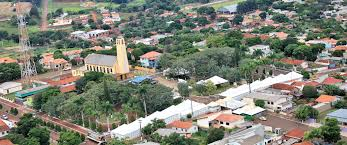
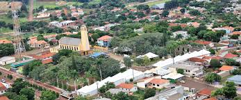

Sobre a Conexão

A relação entre o campo e a cidade é uma dança essencial para o desenvolvimento sustentável do nosso país. Enquanto o campo produz os alimentos e matérias-primas, a cidade oferece tecnologia, serviços e mercados consumidores.
Esta plataforma celebra essa conexão vital, destacando histórias, iniciativas e pessoas que constroem pontes entre esses dois mundos.
Por que é importante?
Alimentação
O campo abastece as cidades com alimentos frescos e nutritivos, garantindo a segurança alimentar da população urbana.
Economia
A produção agrícola movimenta cadeias produtivas que geram empregos tanto no campo quanto nas cidades.
Cultura
Tradições rurais e urbanas se misturam, criando uma identidade cultural rica e diversificada.
Galeria

 
